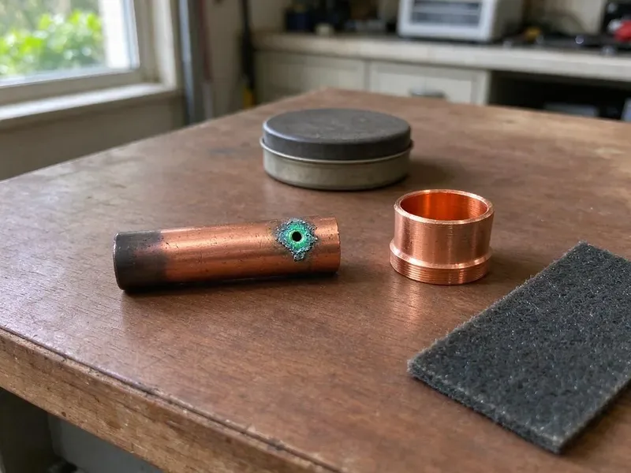

Septic Tank Repair in Keizer, OR
JFL Plumbing offers complete septic tank repair services across Keizer, OR. We diagnose and fix problems quickly, restoring your system's function.
- Quick Septic Diagnostics
- Clear Pricing
- Permit Coordination
- Upfront Quotes
Protect your yard and home with septic tank repair in Keizer, OR.
Don't let a failing septic system disrupt your home, contact JFL Plumbing for immediate service.
Dependable Septic Tank Repair for Keizer, OR Homeowners
At JFL Plumbing, we focus on diagnosing and resolving all types of septic tank issues. Our skilled plumbers provide lasting solutions to keep your system functioning efficiently for years to come.
Our expertise includes:
- Fixing baffle failures and inlet and outlet pipe issues.
- Camera inspection of building sewer and distribution lines
- Drain field repair and replacement expertise.

Additional Plumbing Repair Services in Keizer, OR
We offer expert plumbing repair services across Keizer, OR to fix leaks, restore flow, and keep your system running smoothly.


Customers
Why Choose JFL Plumbing for Septic Tank Repair in Keizer, OR?
We don't just fix symptoms, we identify the root cause of your septic tank problems. Our solutions are designed for durability, considering the real demands of Oregon homes.
- Permit Savvy, We coordinate with local environmental health officials when a repair requires approval.
- Advanced Tools, We use modern diagnostic equipment, like sewer cameras and hydro-jetting, to precisely pinpoint and clear septic line blockages without extensive excavation.
- Whole System View, We inspect from the house cleanout through the tank to the drain field.
Citywide Coverage
No matter where you are located within Keizer, our expert team is available to provide prompt and professional septic tank repair services. We cover the entire area so no homeowner is left with a broken system.
Experienced Team
Our team of licensed plumbers has dedicated training in septic system diagnostics and repair. They regularly attend industry seminars to stay updated on the latest techniques and technologies for effective septic tank service.
Safety-First Approach
Safety is paramount in all our septic tank repair operations. We strictly adhere to all safety protocols and use appropriate personal protective equipment to protect both our team and your property during the repair process.
Trusted Certified Keizer Plumbing Services Professionals
At JFL Plumbing, we take pride in providing licensed, certified plumbing services throughout Keizer, OR. Backed by leading industry credentials, our experienced plumbers combine technical skill with genuine customer care. Whether it is repair, installation, or maintenance, we follow strict safety and quality standards to deliver lasting results you can trust.
Call Us Now PHCC Plumbing Contractor Recognition
PHCC Plumbing Contractor Recognition Better Business Bureau (BBB) Accreditation
Better Business Bureau (BBB) Accreditation Angi Certified Pro
Angi Certified Pro ISO 9001 Quality Management Certification
ISO 9001 Quality Management CertificationReliable Septic Tank Repair Services in Keizer, OR
Alternative Septic System Repair in Keizer, OR
Some properties use aerobic treatment units or other alternative systems because of soil or lot size limits. These systems have air pumps, timers and alarms that need routine service. We repair aerators, replace diffusers and troubleshoot control panels. We also help keep maintenance records called for by your permit.

Drain Field Repair and Restoration in Keizer, OR
A failing drain field can cause standing water, lush green patches and sewage odors in your yard. JFL Plumbing focuses on diagnosing drain field problems, which often stem from compaction, hydraulic overload or biomat buildup. We offer complete repair solutions, including aeration, soil rejuvenation and partial or full drain field replacement, matched to the soil conditions on your Keizer, OR property.
Leach Field Repair in Keizer, OR
Soggy ground, strong odors or lush grass over the field can signal a struggling disposal area. Causes include clogged distribution pipes, a crushed distribution box or soil sealed by solids. We jet clean lines, replace distribution boxes and assess whether the field can be restored. If replacement is needed, we explain the design and permit steps.
Septic Baffle and Tee Repair in Keizer
Baffles and tees keep scum and solids in the tank so they do not flow out into the leach field. Concrete baffles crumble from hydrogen sulfide gas, and plastic tees can break off. When they fail, solids clog the field fast. We replace damaged baffles with durable PVC tees and add an effluent filter where appropriate.
Septic Pump and Alarm System Repair in Keizer
Many modern septic systems, especially those on sloped properties or with advanced treatment units, depend on a working septic pump and alarm. When your pump fails or the alarm sounds, it indicates a serious issue. Our team can repair or replace faulty pumps, floats and electrical components so your system effectively moves wastewater to the drain field. We service all major pump brands for homes in Keizer.
Septic Pipe Repair and Replacement in Keizer, OR
Damaged pipes leading to or from your septic tank can cause backups, leaks and unpleasant odors. These pipes, often made of PVC or cast iron, can crack due to shifting soil, root invasion or age. Crawlspace foundations are very common here, which makes many plumbing repairs more accessible than under a slab. JFL Plumbing offers complete pipe repair and replacement services, including excavation, precise pipe fitting and backfilling, protecting the integrity of your entire septic system in Keizer, OR.
Commercial Septic System Repair in Keizer, OR
Commercial properties often have larger, more complex septic systems that demand specialized repair knowledge. JFL Plumbing provides complete septic tank repair for businesses throughout Keizer, OR, understanding the challenges of high-volume usage and diverse waste streams. We make sure your commercial septic system operates efficiently, preventing costly downtime and maintaining compliance with health regulations.

Septic Repair Cost Comparison in Keizer, OR
Baffle or tee replacement often costs $300 to $900, and effluent pump replacement typically runs $900 to $2,000. Inlet line repairs range from $800 to $3,000 depending on depth and length. Leach field restoration or replacement can cost $5,000 to $20,000 or more. We help you choose the option that fixes the problem at the best long-term cost.
Septic Tank Repair Near Me in Keizer, OR
When you search for 'septic tank repair near me' in Keizer, OR, JFL Plumbing is your go-to local expert. Our nearby crews allow us to respond quickly to your septic emergencies and routine service calls.
When you search for septic tank repair near me, you need a company that repairs systems, not just pumps them. JFL Plumbing handles both the plumbing and the septic components. That means one call covers the whole problem.
JFL Plumbing at a Glance
- Fully licensed plumbing team covering Keizer, OR
- Same-day appointments and 24/7 emergency response
- Clear written estimates, no hidden fees
- 4.8-star rated by 657+ Oregon customers
Keizer Map
Keizer Information
- Population
- 38,564
- Area codes
- Local
- Service area
- Keizer and communities within 40 miles
- Nearby
- Salem, McMinnville, Albany, Tigard
Crawlspace foundations are very common here, which makes many plumbing repairs more accessible than under a slab. Effective septic tank repair is key for homes in Keizer, OR, where soil and weather both affect how well a system performs.
Expert Services
Trust our professionals for reliable JFL Plumbing solutions in Keizer, OR.
Our Specialized Plumbing Services in Keizer, OR
At JFL Plumbing, we provide a complete range of plumbing services across Keizer, OR. From leak detection to full system installations, our team ensures fast, precise, and affordable service for both residential and commercial properties. Explore our core services below:


How Our Septic Tank Repair Process Works in Keizer, OR
Here is how we take your septic system from trouble to working order.
Request a Quote
Contact us at (971) 333-7694 to schedule your septic tank repair service. Our friendly team will gather initial information about your issue and set up an appointment.
Diagnosis & Estimate
A certified JFL Plumbing technician will arrive to thoroughly inspect your septic system, diagnose the problem and provide a detailed, upfront repair estimate.
Expert Repair
Upon your approval, our plumber will carry out the septic tank repair using specialized tools and techniques, delivering a durable and code-compliant solution.
Frequently Asked Questions About Septic Tank Repair in Keizer
Common repairs such as baffle replacement run $300 to $900, and effluent pump replacement usually costs $900 to $2,000. Leach field work can range from $5,000 to $20,000 or more. We provide a firm price after inspection.
Sometimes. Jetting lines, replacing a distribution box or resting the field can restore it. If the soil is sealed, replacement may be the only long-term fix.
Rules on septic inspections at the time of sale vary by state and by local health department. Rural homes near Keizer often pair a septic system with a private well, so pump, tank and water quality service all come up. We can help with repairs found during that inspection.
JFL Plumbing stands behind the quality of our septic tank repair services with a comprehensive warranty on parts and labor. We will provide full warranty details for your particular repair during the initial consultation, giving you peace of mind.
Septic tank repairs are complex and can be dangerous, involving exposure to raw sewage and potential soil contamination. It is highly recommended to hire a licensed professional like JFL Plumbing so the repair is done safely, effectively and in compliance with local health codes.
Many households need pumping every three to five years, depending on tank size and household use. Regular pumping protects the leach field from buildup.
JFL Plumbing repairs and services a wide range of septic system components from leading brands. This includes pumps from Zoeller, Myers and Liberty, as well as various types of septic tanks, distribution boxes and alarm systems. We are experienced with both conventional and aerobic units.
Yes, JFL Plumbing stands behind the quality of our work. We offer warranties on our septic tank repair services and the parts we install. The full warranty details will be provided at the time of service, giving you peace of mind that your repair is covered.
What People Are Saying About Our Plumbing Experts?

Daniel K.
A pipe burst at 11 pm and they actually answered. The plumber showed up within the hour, shut everything down, and had us back to normal the next morning. Could not ask for more.
Emergency Plumbing · Tigard, OR
Sofia M.
Two new toilets installed in one visit, no mess left behind, and the tech even adjusted a faucet he noticed was dripping. Fair pricing and really friendly.
Toilet Installation · Keizer, OR
Patricia H.
We had a slab leak that two other companies could not find. JFL Plumbing located it in under an hour, explained our options, and the price matched the quote to the dollar.
Slab Leak Repair · Oregon City, ORLaura S.
I scheduled a water heater replacement, and the team made the process smooth and affordable. The new unit works perfectly, and they cleaned up after completing the job.
Water Heater Replacement · Corvallis, OR
Robert G.
The trenchless sewer replacement saved our front yard. They walked us through the camera inspection footage first so we knew exactly what we were paying for.
Sewer Line Replacement · Oregon City, OR
Emily R.
I called JFL Plumbing for plumbing repair, and the technician was fast, polite, and thorough. They explained the problem clearly and fixed it the same day. I will definitely hire them again. Highly recommended!
Plumbing Repair · Albany, OR